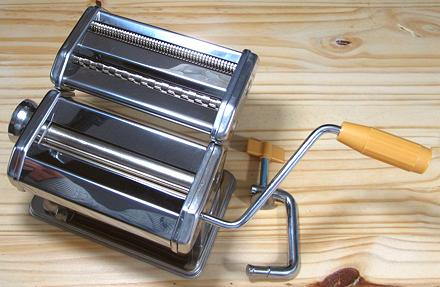

Pasta Machine

Neither dried pasta nor fresh pasta is inherently "better", but they are
definitely different. They are each favored in parts of Italy, or for
particular recipes. Fresh pasta is usually rolled out thin and cut into
strips. This type of machine makes both rolling and cutting easier and
more uniform in thickness and width. It is a good thing to have in a
household that often makes fresh pasta, but of no use in households that
don't.
Similar machines are available as attachments to powerful stand mixers,
like the KitchenAid.
ke_pamkrz 220304 - www.clovegarden.com
©Andrew Grygus - agryg@clovegaden.com
Photos on this
page not otherwise credited are © cg1 -
Linking to and non-commercial use of this page permitted